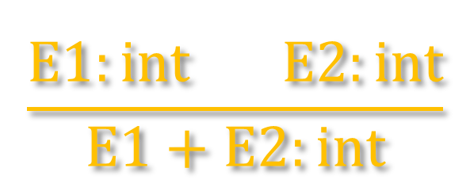

Frank Coelho de Alcantara -2021
Segurança para execução.
Detecção de erros em tempo de compilação.
Metáforas mas expressivas: overload, por exemplo.
Fornecer informações para o otimizador de código.
Cada campo usa o mesmo espaço de memória então o tamanho da union é o tamanho do maior campo definido.
Só Podemos usar um campo de cada vez. Se atribuirmos valores, ainda que corretos, para cada um dos campos em sequencia, apenas a última atribuição terá sentido.
Uma herança dos tempos que a memória era muito cara e reduzida.
Nestes tempos a uninion era uma forma bem razoável de manter uma metáfora consistente nos seus programas.
As structs são representadas como um bloco de memória, grande o suficiente para armazenar todos os campos.
O campos são ordenados de acordo com a a ordem de declaração.
O compilador irá determiner o tamanho total e a posição dos campos em memória. Durante a execução o programa não entende a estrutura da struct.
Ou seja, a struct, como a definimos só existe em forma de artefato de Código e metáfora.
Uma declaração é bem formatada se:
Sua variável alvo está bem formatada;
Sua expressão fonte está bem formatada, e os tipos declarados da fonte e do alvo coincidem;
Uma condicional é bem formatada se sua expressão de teste for do tipo bool e tanto a opção then quanto a opção else estão bem formatadas.
Com a sentença: a expressão $\lambda$ é do tipo $T$, pretendemos mostrar, sem ter que avaliar a expressão que, quando a expressão for avaliada, irá gerar um tipo de dados $\lambda'$ que, sem dúvida, será do tipo $T$.
As seguintes declarações são equivalentes:
O cálculo de Sequentes é uma parte da lógica de primeiro grau que permite a automação do processo de inferência de uma expressão lógica.
Parte de um conjunto condicional de proposições tautológicas, chamada de antecedente, onde cada linha de prova, também é uma tautologia condicional, chamada de sequente.
Estas inferências são expressas na forma: $\Gamma \vdash \Delta$. Onde $\Gamma$ representa um conjunto de fórmulas, ou contexto e $\Delta$ outro conjunto de fórmulas, ou sequente.
Formalmente definiremos um tipo por: $\Gamma \vdash \lambda: T$.
Que leremos dado o contexto $\Gamma$ existe um $\lambda$ do tipo $T$.
Como podemos verificar os tipos nas seguintes declarações em cálculo de sequentes?
$\text{𝑓𝑙𝑜𝑎𝑡 𝑓(𝑓𝑙𝑜𝑎𝑡 𝑥, 𝑓𝑙𝑜𝑎𝑡 𝑦) \{ 𝑟𝑒𝑡𝑢𝑟𝑛 𝑥+𝑦; \}}$
$𝑥 : 𝑓𝑙𝑜𝑎𝑡, 𝑦 : 𝑓𝑙𝑜𝑎𝑡 ⊢ 𝑥+𝑦 : 𝑓𝑙𝑜𝑎𝑡$
$\text{𝑖𝑛𝑡 𝑔(𝑖𝑛𝑡 𝑥, 𝑖𝑛𝑡 𝑦) \{ 𝑟𝑒𝑡𝑢𝑟𝑛 𝑥+𝑦; \}}$
$𝑥 : 𝑖𝑛𝑡, 𝑦 : 𝑖𝑛𝑡 ⊢ 𝑥+𝑦 : 𝑖𝑛𝑡$
Usamos o cálculo de sequentes para definir as regras de atribuição, verificação e checagem de tipos. Em um formato mais conveniente.
Lemos: se 𝐸1 tem tipo int e 𝐸2 tem tipo int então E1+E2 tem tipo int